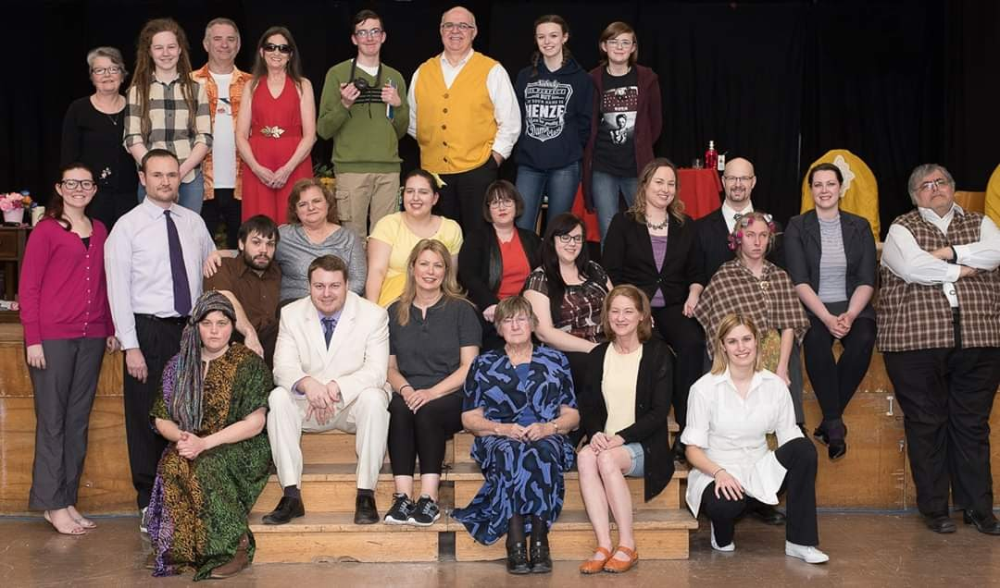
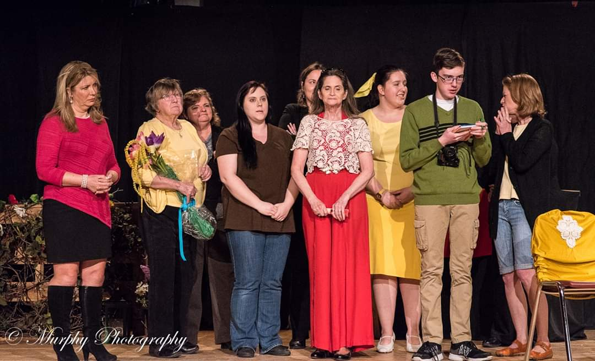
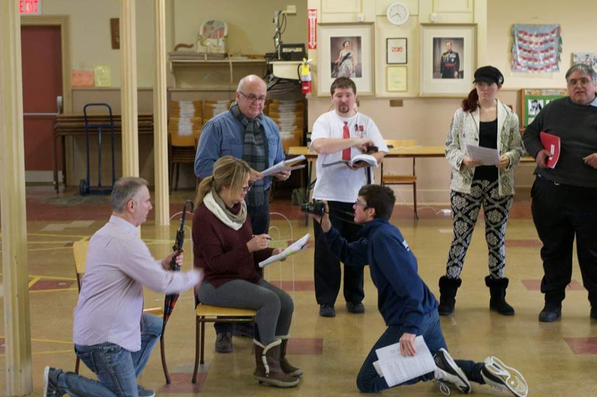
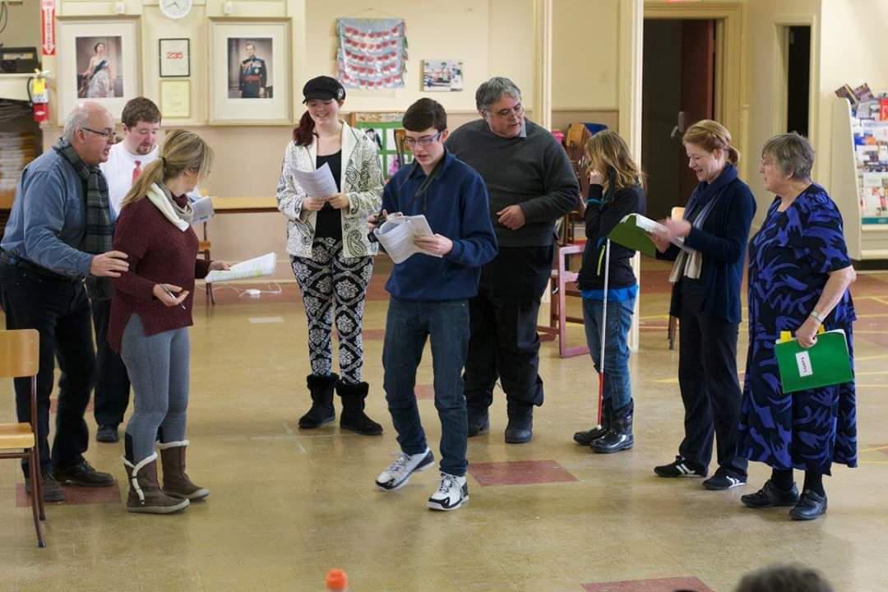
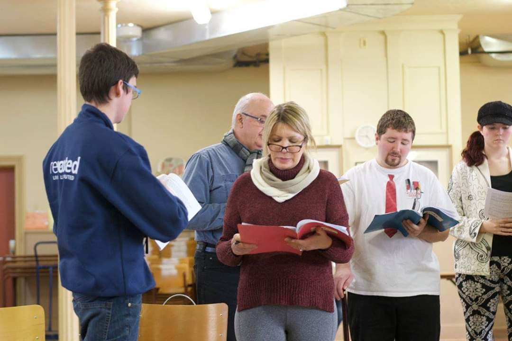
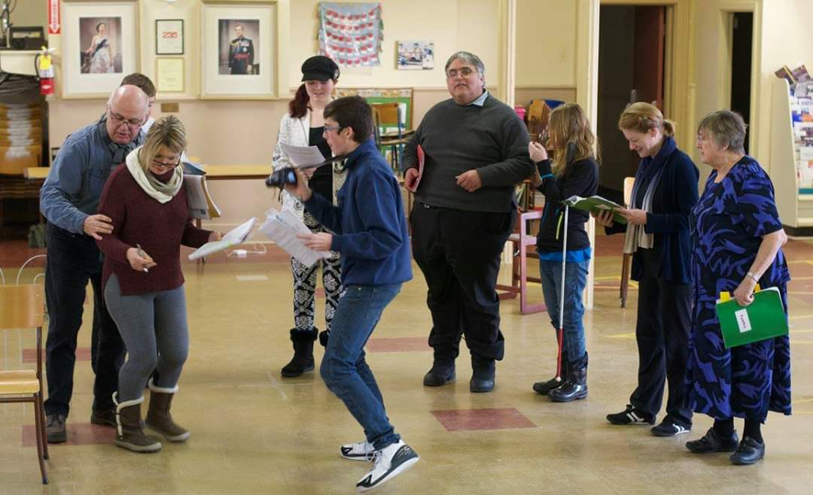
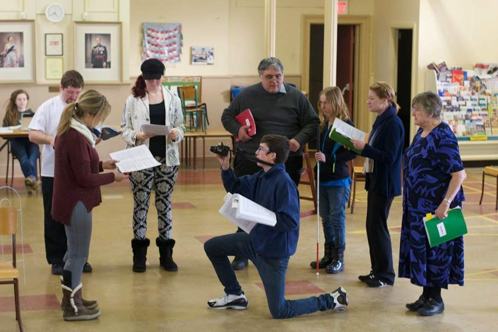
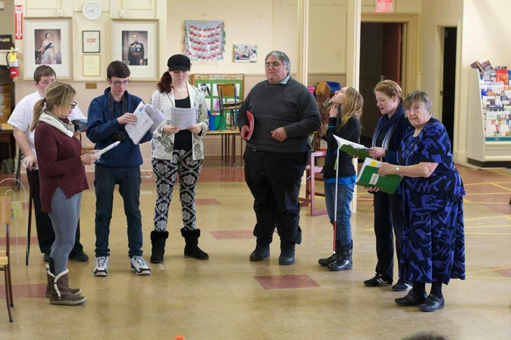
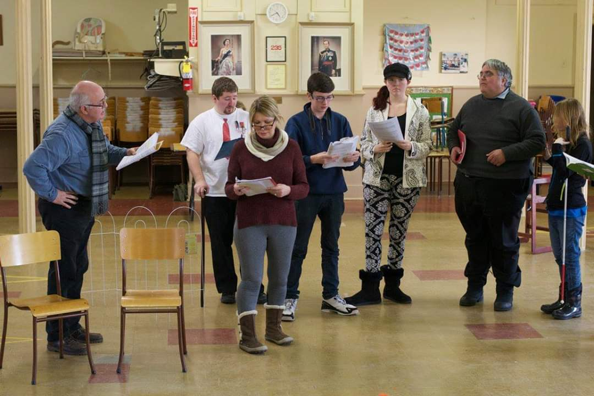

Daniel Astley's Portfolio
|
Theatre Experience
|
Video Projects
|
Audio Projects
|
Scripts and Short Stories
|
Contact
Ichthys Theatre: Agatha Raisin & The Quiche of Death

Dani Played the role of Alistair during this production based of the famous book series by M.C. Beaton. The show ran during the months of March and April 2017 and was directed by Martin Smith

Rehersal Pictures
      
You Have reached the bottom of This page!!